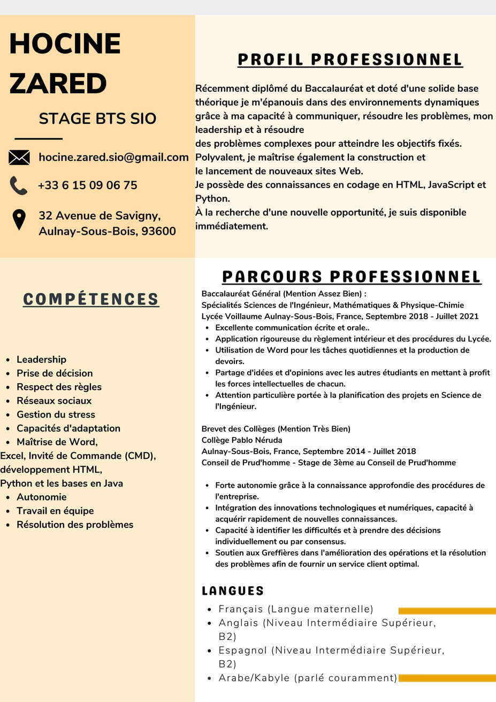

Mon CV en Image & Texte

HOCINE ZARED
Recherche de Stage BTS SIO
Nationalité: Français
Date de naissance: 26-10-2003
Adresse: 32 Avenue de savigny, 93600 Aulnay-Sous-Bois, France
Téléphone: +33 6 15 09 06 75
E-mail: hocine.zared.sio@gmail.com
EXPÉRIENCES
Aulnay-Sous-Bois, France • Vendeur
Mai 2021 - Juin 2021 -----• Bibliothèque d'Aulnay
-----------------------------•a traité divers documents et saisi des informations dans des bases de données.
Aulnay-Sous-Bois, France • Collégien
Sept 2014 -- Juillet, 2017 • Collège Pablo Néruda
Sept 2017 --- Juin , 2021 • Lycée Voillaume
PROFIL PROFESSIONNEL
Récemment diplômé du Baccalauréat et doté d'une solide base théorique, je m'épanouis dans des
environnements dynamiques grâce à ma capacité à communiquer, résoudre les problèmes, mon leadership
et à résoudre des problèmes complexes pour atteindre les objectifs fixés.
Polyvalent, je maîtrise également la construction et
le lancement de nouveaux sites Web. Je possède des connaissances en codage en HTML,
JavaScript et Python. À la recherche d'une nouvelle opportunité, je suis disponible
immédiatement.
PARCOURS /•/ FORMATIONS
Baccalauréat Général (Mention Assez Bien) :
Spécialités Sciences de l'Ingénieur, Mathématiques & Physique-Chimie
Lycée Voillaume
Aulnay-Sous-Bois, France, Septembre 2018 - Juillet 2021
- Excellente communication écrite et orale..
- Application rigoureuse du règlement intérieur et des procédures du Lycée.
- Utilisation de Word pour les tâches quotidiennes et la production de devoirs.
- Partage d'idées et d'opinions avec les autres étudiants en mettant à profit les forces intellectuelles de chacun.
- Attention particulière portée à la planification des projets en Science de l'Ingénieur.
Brevet des Collèges (Mention Très Bien)
Collège Pablo Néruda
Aulnay-Sous-Bois, France, Septembre 2014 - Juillet 2018
Conseil de Prud'homme - Stage de 3ème au Conseil de Prud'homme
- Forte autonomie grâce à la connaissance approfondie des procédures de l'entreprise.
- Intégration des innovations technologiques et numériques, capacité à acquérir rapidement de nouvelles connaissances.
- Capacité à identifier les difficultés et à prendre des décisions individuellement ou par consensus.
- Soutien aux Greffières dans l'amélioration des opérations et la résolution des problèmes afin de fournir un service client optimal.
COMPÉTENCES
- Leadership
- Prise de décision
- Respect des règles
- Réseaux sociaux
- Gestion du stress
- Maîtrise de Word, Excel, Invité de Commande (CMD), développement HTML, Python et les bases en Java
- Capacités d'adaptation
- Autonomie
- Travail en équipe
- Résolution des problèmes
LANGUES
- Français (Langue maternelle)
- Anglais (Niveau Intermédiaire Supérieur, B2)
- Espagnol (Niveau Intermédiaire Supérieur, B2)
- Arabe/Kabyle (parlé couramment)